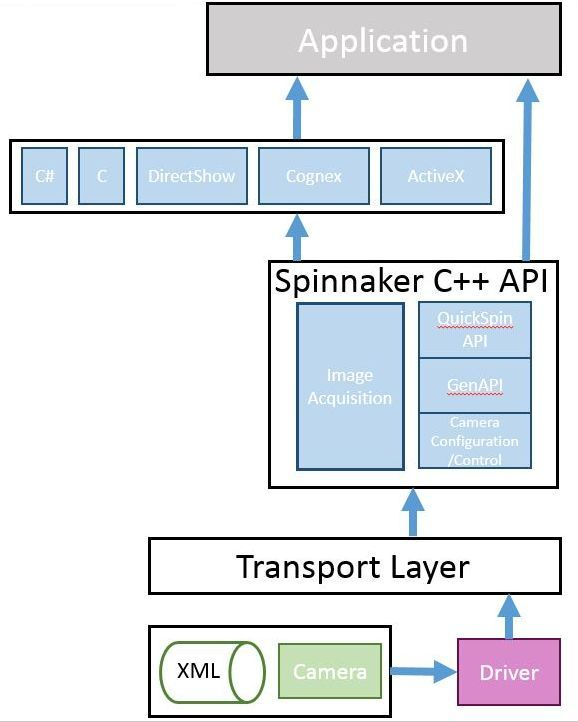
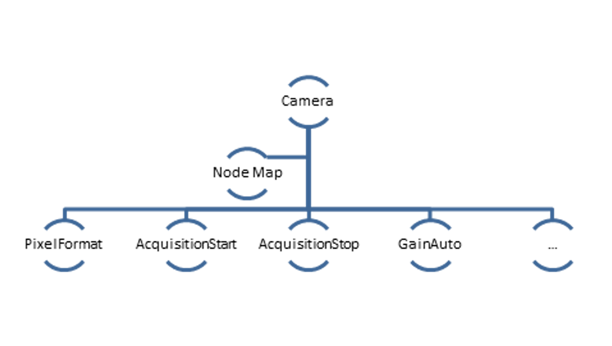
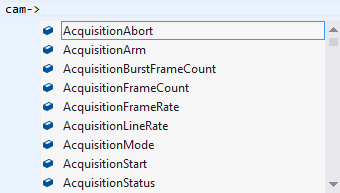
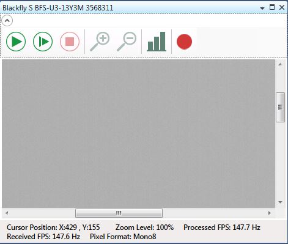
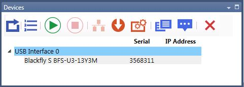
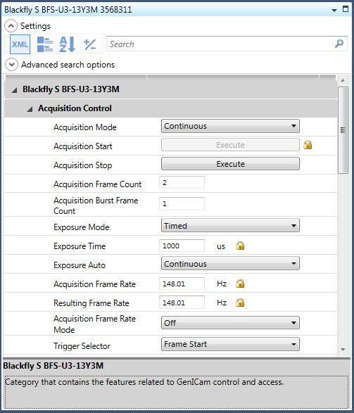
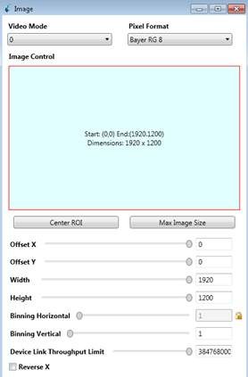
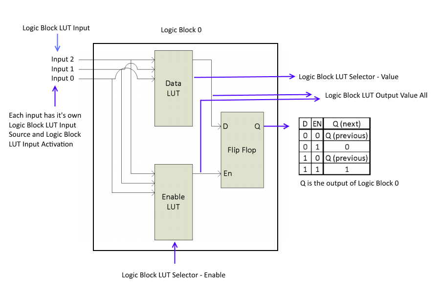
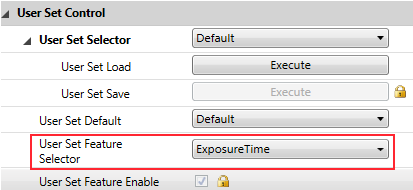

|
Spinnaker SDK C++ |
| 4.2.0.83 |

|
|
Spinnaker SDK C++ |
| 4.2.0.83 |
|
|
Fundamentals of Spinnaker
C# Graphical User Interface API
Recommended Development Environment
Instantiate a Single Camera and Multiple Cameras
Popular Features in Spinnaker
Asynchronous Hardware Triggering
Setting Number of Software Buffers
Basic Features
Advanced Features
Spinnaker API is built around the GenICam standard, which offers a generic programming interface for various cameras and interfaces. Spinnaker is an extension of GenAPI. Spinnaker provides quick and easy access to your camera.
Spinnaker API includes two major components:
Image Acquisition
This is the acquisition engine that is responsible for setting up image buffers and image grabbing.
Camera Configuration
This is the configuration engine that is responsible for controlling your camera. This component consists of QuickSpin API, which is a wrapper that makes GenAPI easy to use.

Included with the Spinnaker SDK are a number of source code examples to help you get started. These examples are provided for C, C++, C#, and VB.NET languages and are precompiled for your convenience.
The table below describes the available Spinnaker SDK examples.
| Spinnaker Example | Description | |
| Acquisition | Enumerate, start acquisition, and grab images | |
| AcquisitionMultipleCamera | How to capture images from multiple cameras simultaneously | |
| ChunkData | How to get chunk data on an image, either from the nodemap or from the image itself | |
| DeviceEvents | Create a handler to access device events | |
| Enumeration |
Enumerate interfaces and cameras | |
| EnumerationEvents | Explore arrival and removal events on interfaces and the system | |
| Exposure* | Configure a custom exposure time | |
| ImageEvents | Image events shows how to acquire images using the image event handler. | |
| ImageFormatControl |
Configure a custom image size and format | |
| Logging | Create a logging event handler | |
| LookupTable | Configure lookup tables for the customization and control of individual pixels | |
| NodeMapCallback | Create, register, use, and unregister callbacks | |
| NodeMapInfo | How to retrieve node map information | |
| SaveToVideo | Save images in various video formats | |
| Sequencer (Blackfly S, Forge and Oryx only) |
Capture multiple images with different parameters in a sequence | |
| SpinSimpleGUI_DirectShow | Graphical User Interface for evaluating and setting camera parameters using DirectShow | |
| SpinSimpleGUI_MFC | Graphical User Interface for evaluating and setting camera parameters | |
| Trigger |
Trigger shows how to trigger the camera. | |
| *Also available in QuickSpin | ||
Every GenICam compliant camera has an XML description file. The XML describes camera features, their interdependencies, and all other information like availability, access control, and minimum and maximum values. These features include Gain, Exposure Time, Image Format, and others. The elements of a camera description file are represented as software objects called Nodes. A Node map is a list of nodes created dynamically at run time.

To access camera properties such as setting image width:
| C++ GenAPI |
GenApi::INodeMap & nodeMap = cam.GetNodeMap(); CIntegerPtr width = nodeMap.GetNode("Width"); width->SetValue(new_width_val); |
Generic programming with GenICam requires developers to know feature names before using them. Spinnaker provides the QuickSpin API, which requires fewer lines of code and allows you to make use of auto completion. The QuickSpin API consists of a list of static functions integrated into the Camera class.
All camera parameters can be accessed through the camera pointer object.

Most camera parameters (all items in camera.h) can be accessed using the QuickSpin API.
For parameters not handled by QuickSpin API, you can access them via GenICam API (GenAPI). GenAPI is the generic programming interface for configuring all kinds of cameras. GenAPI is maintained by the European Machine Vision Association.
Below is an example comparison of inquiring camera gain via GenAPI and QuickSpin API.
| C++ GenAPI |
Spinnaker::GenApi::INodeMap & nodeMap = cam->GetNodeMap(); |
| C++ QuickSpin API |
float quickGainVal = cam->Gain.GetValue(); |
For applications that want to take advantage of Spinnaker's graphical user elements, graphical user interface (GUI) controls are available. GUI controls are divided into static and dynamic categories. Static GUI controls include the CameraSelectionDialog, display window, and property grid window. The GUI dynamically loads the camera's features from the firmware. Therefore, new firmware has the ability to add GUI controls to the same application, without recompiling.
|
Static GUI Dialogs |
|
|
//To show image drawing window GUIFactory AcquisitionGUI = new GUIFactory (); AcquisitionGUI.ConnectGUILibrary(cam); ImageDrawingWindow AcquisitionDrawing = AcquisitionGUI.GetImageDrawingWindow(); AcquisitionDrawing.Connect(cam); AcquisitionDrawing.Start(); AcquisitionDrawing.ShowModal(); |
 |
|
//To show camera selection window GUIFactory AcquisitionGUI = newGUIFactory (); AcquisitionGUI.ConnectGUILibrary(cam); CameraSelectionWindow camSelection = AcquisitionGUI.GetCameraSelectionWindow(); camSelection.ShowModal(true); |
 |
|
//To show property grid window GUIFactory AcquisitionGUI = new GUIFactory (); AcquisitionGUI.ConnectGUILibrary(cam); PropertyGridWindow propWindow = AcquisitionGUI.GetPropertyGridWindow(); propWindow.Connect(cam); propWindow.ShowModal(); |
 |
|
Dynamic GUI Control |
|
|
GUIFactory dynamicGUI = new GUIFactory (); dynamicGUI.ConnectGUILibrary(cam); // Get dialog name via dynamicGUI.GetDialogNameList() Window dlg = dynamicGUI.GetDialogByName(dialogName); dlg.Owner = Window .GetWindow(this ); dlg.Show(); |
 |
The camera's XML file contains information such as feature naming, register mapping, and dependencies between features. It is typical for GenICam-compliant software to cache the XML file for quicker access to the camera's definition. Spinnaker caches the XML file in a binary format to achieve better performance.
Camera XML files are located in:
C:\ProgramData\Spinnaker\XML
Spinnaker supports the following list of operating systems and development environments.
|
OS Compatibility |
Windows 7 |
|
Language Support |
C |
|
Compiler Support |
Visual Studio 2015 |
|
Interface Support |
USB3 Vision 1.0 |
Before you can instantiate a camera, you must create and initialize a system object. The System Singleton object is used to retrieve the list of interfaces (USB 3.1 or GigE) and cameras available. You must call ReleaseInstance() at the end of your program to free up the system object.
Multiple cameras can only be instantiated one at a time.
| Instantiate multiple cameras (C++) |
// Retrieve singleton reference to system object
CameraList camList = system->GetCameras(); for (unsigned int i = 0; i < numCameras; ++i) CameraPtr pCamera = camList.GetByIndex(i); pCamera->Init(); } // Release system
|
The snippet below detects the number of cameras connected and enumerates them from an index.
The snippet below does the following:
BlackLevel is the GenICam feature that represents the DC offset that is applied to the video signal. This example compares the mechanism used to set this feature in both environments.
| Spinnaker C++ QuickSpin API |
// Brightness is called black level in GenICam //Set the absolute value of brightness to 1.5%. |
| Spinnaker C++ GenAPI |
CEnumerationPtr blackLevelSelector = nodeMap.GetNode("BlackLevelSelector"); CFloatPtr blackLevel = nodeMap.GetNode("BlackLevel"); |
ExposureTime refers to the amount of time that the camera's electronic shutter stays open. This example sets your camera's exposure/shutter time to 20 milliseconds.
The following code snippet adjusts gain to 10.5 dB.
The following code snippet adjusts gamma to 1.5.
| Spinnaker C++ QuickSpin API |
// Set the absolute value of gamma to 1.5
|
| Spinnaker C++ GenAPI |
CFloatPtr gamma = nodeMap.GetNode("Gamma"); |
The following code snippet adjusts the white balance's red and blue channels.
Raw image data can be accessed programmatically via the getData method of the Spinnaker Image class. In 8 bits per pixel modes such as BayerRG8, the first byte represents the pixel at [row 0, column 0], the second byte at [row 0, column 1], and so on. The top left corner of the image data represents row 0, column 0.
The following code snippet adjusts the number of image buffers that the driver initializes for buffering images on your PC to 11 (default is 10).
| Spinnaker C++ API |
Spinnaker::GenApi::INodeMap & sNodeMap = cam->GetTLStreamNodeMap(); |
Spinnaker introduces two event classes: interface events and device events.
The interface event class is a new feature that is responsible for registering and deregistering user defined interface events such as device arrival and removal.
| Interface Event C++ |
class InterfaceEventHandlerImpl : public InterfaceEventHandler public : void OnDeviceArrival(CameraPtr pCamera) std::cout<< "A Camera Arrived" << std::endl; }; void OnDeviceRemoval(CameraPtr pCamera) std::cout<< "A Camera was removed with serial number: " << }; }; InterfaceEventHandlerImpl handler; |
The device event class is responsible for registering and deregistering user defined device events such as start or end of exposure.
| Device Event C++ |
// Select the Exposure End event
// Turn on the Event notification for Exposure End Event
// Once Exposure End Event is detected, the OnDeviceEvent function will be called
public : void OnDeviceEvent(Spinnaker::GenICam::gcstring eventName) std::cout << "Got Device Event with " << eventName << " and ID=" << GetDeviceEventId() << std::endl; } }; // Register event handler
|
You can grab images using the GetNextImage() function. This function returns an image pointer for the current image. The image pointer should be released whenever you are done with the image. Image pointer, being a smart pointer, is automatically released when set to null or when out of scope.
| Image Acquisition (C++) |
// Begin acquiring images
ImagePtr pResultImage = cam->GetNextImage(); pResultImage->Release(); |
In almost all cases, you should check to see if the grabbed image has any errors. To do so, you need to call getImageStatus().
| To check for errors in the image (C++) |
ImageStatus imageStatus = pResultImage->GetImageStatus(); |
| Available error enums |
/** Status of images returned from GetNextImage() call. */ enum ImageStatus |
The image pointer (ImagePtr) is a smart pointer that points to the image object. You can have multiple image pointers pointing to the same object. Smart pointers automatically manage the life time of the object that it points to. You can also re-use the same image pointer object.
Image pointer should always be assigned before using.
| Image Pointer Usage |
ImagePtr pResultImage; // Retrieve the next received image
ImagePtr duplicateImagePtr = pResultImage; |
| Image Pointer INCORRECT Usage |
// Incorrect usage
|
| Image Pointer CORRECT Usage |
// Correct usage
|
Spinnaker C++ uses a try catch block for exception handling.
| Spinnaker C++ API |
//Assuming Camera& Cam
cam.Init(); } |
Loading and saving a raw image (.raw) from disk into Spinnaker library can be achieved via Image class's smart pointer.
| Loading and Saving Images |
int offlineImageWidth = 1280; // Allocate buffer for image
// Create empty image
FILE* inFile; // Load image from disk into buffer (offlineData)
// Convert image to mono8 data format
// Save image
|
Chunk data is extra information that the camera can append to each image besides image data. Examples of chunk data include frame counter, image width, image height and exposure time.
For a listing of chunk data information supported by your camera, please refer to the camera's Technical Reference manual.
An image is comprised of:
| C++ Enable Chunk Data |
Cam->ChunkSelector.SetValue(Spinnaker::ChunkSelectorEnums::ChunkSelector_ExposureTime); Cam->ChunkEnable.SetValue(true); Cam->ChunkModeActive.SetValue(true); |
| C++ Retrieve Chunk Data |
const ChunkData& chunkData = rawImage->GetChunkData(); float64_t currentExposure = chunkData.GetExposureTime(); |
The purpose of a sequencer is to allow you to programmatically control the acquisition parameters of an image sequence. You can define not only how the images are captured (i.e. the camera feature settings) but also when the camera transitions from one acquisition setting to another. This is akin to a state machine diagram where the states correspond to the sequencer set feature settings, and the transition among states corresponds to a particular event that triggers the state machine to move from one state to another.
To configure sequencer on your camera, you can use SpinView's sequencer tab. Or, to programmatically configure it, you can use the C++ Sequencer source code example that is installed along with Spinnaker SDK.
A Logic Block is a collection of combinatorial logic and latches that allows the user to create new, custom signals inside the camera. Each Logic Block is comprised of 2 lookup tables (LUT) with programmable inputs, truth tables and a flip flop output. There is a LUT for both the D input (Value LUT) and the enable input (Enable LUT) of the flip flop. Both LUTs have 3 inputs and thus have 8 configuration bits for their truth table.
For more information, see Using Logic Blocks.

Spinnaker supports five levels of logging:
You can define the logging level that you want to monitor. Levels are inclusive, that is, if you monitor debug level error, you also monitor all logging levels above it.
For a complete C++ and C# example of Logging, please see Spinnaker SDK source code examples. By default, Spinnaker SDK's SpinView application saves all logging data to:
C:\ProgramData\Spinnaker\Logs
| Register Logging (C++) |
SystemPtr system = System::GetInstance(); //
Register logging callback class
// Set
callback priority level
class LogCallback : Spinnaker::LoggingEvent
void OnLogEvent(LoggingEventDataPtr
loggingEventDataPtr) }; |
User set is an on camera non-volatile memory space that you can use to store camera properties such as exposure and gain.
To check if user set supports the feature that you want to save, you can either query the User Set Feature Selector programmatically or run SpinView:

Please see (http://softwareservices.flir.com/Spinnaker/latest/_programmer_guide.html) for the latest version of this document